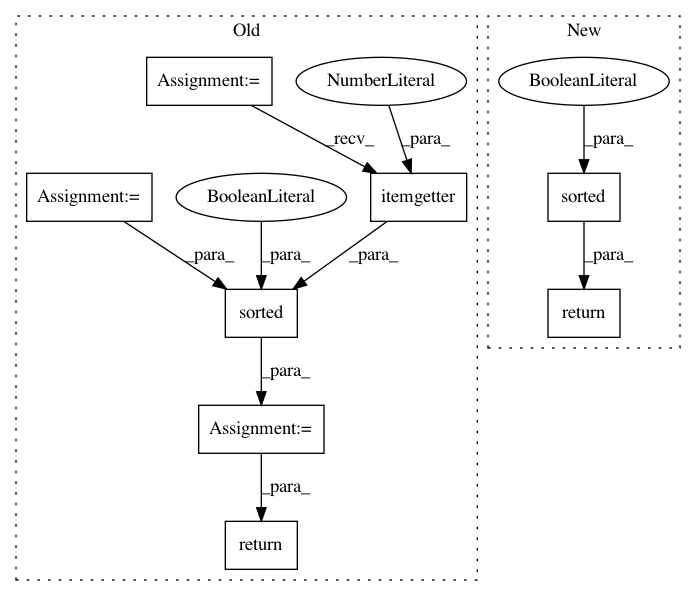

7b7c6955a9119734ac70f902129b7fbfd1f0b660,jieba/posseg/viterbi.py,,get_top_states,#Any#Any#,5
Before Change
MIN_INF = float("-inf")
def get_top_states(t_state_v, K=4):
items = t_state_v.items()
topK = sorted(items, key=operator.itemgetter(1), reverse=True)[:K]
return [x[0] for x in topK]
def viterbi(obs, states, start_p, trans_p, emit_p):
V = [{}] //tabular
mem_path = [{}]
After Change
MIN_INF = float("-inf")
def get_top_states(t_state_v, K=4):
return sorted(t_state_v, key=t_state_v.__getitem__, reverse=True)[:K]
def viterbi(obs, states, start_p, trans_p, emit_p):
V = [{}] //tabular
mem_path = [{}]
In pattern: SUPERPATTERN
Frequency: 3
Non-data size: 8
Instances
Project Name: fxsjy/jieba
Commit Name: 7b7c6955a9119734ac70f902129b7fbfd1f0b660
Time: 2014-11-28
Author: abcdoyle888@gmail.com
File Name: jieba/posseg/viterbi.py
Class Name:
Method Name: get_top_states
Project Name: deepfakes/faceswap
Commit Name: 2bcb7d572ac8fdacceb56d5cbd5b05fad8c71e5e
Time: 2021-03-23
Author: 36920800+torzdf@users.noreply.github.com
File Name: tools/sort/sort.py
Class Name: Sort
Method Name: sort_blur
Project Name: deepfakes/faceswap
Commit Name: 2bcb7d572ac8fdacceb56d5cbd5b05fad8c71e5e
Time: 2021-03-23
Author: 36920800+torzdf@users.noreply.github.com
File Name: tools/sort/sort.py
Class Name: Sort
Method Name: sort_hist_dissim